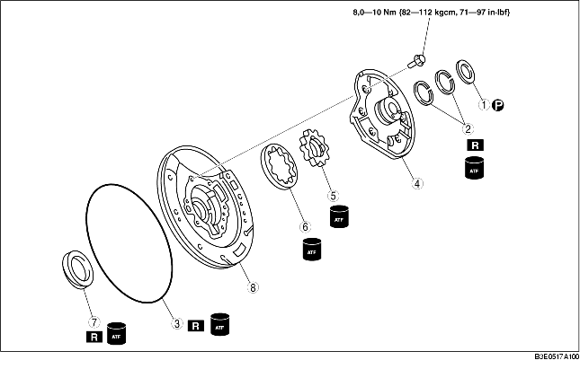

1. Voer voor het demonteren de CONTROLE VOORAF uit.
(Zie Oliepomp vooraf controleren.)
2. Verwijder de onderdelen in de aangegeven volgorde, zie de tabel.
3. Plaats de onderdelen in de omgekeerde volgorde.

|
1
|
Drukring
|
|
2
|
Afdichtingsringen
|
|
3
|
O-ring
|
|
4
|
Oliepompdeksel
|
|
5
|
Binnenste rotor
|
|
6
|
Buitenste rotor
|
|
7
|
Oliekeerring
|
|
8
|
Oliepomphuis
|
• Draai de bevestigingsbouten gelijkmatig in de aangegeven volgorde los en verwijder het oliepompdeksel van het oliepomphuis.
• Breng merktekens aan op de buitenste en binnenste rotor zonder ze te beschadigen of in te deuken. Verwijder daarna het oliepomphuis.
1. Breng ATF aan op de nieuwe oliekeerring en plaats deze met het SST op het oliepomphuis.
2. Meet de speling tussen de binnenrand van het oliepomphuis en de buitenste en binnenste rotor op vier plaatsen.
3. Meet de speling tussen de buitenste rotor en de binnenste rotor.
4. Breng ATF aan op de buitenste en binnenste rotor.
5. Breng de merktekens in lijn en plaats de buitenste en de binnenste rotor.
6. Plaats de oliepompflens.
7. Plaats het oliepompdeksel op het oliepomphuis.
8. Draai de bouten stapsgewijs en gelijkmatig in de aangegeven volgorde vast.
9. Breng ATF aan op een nieuwe O-ring en plaats deze op het oliepomphuis.
10. Breng ATF aan op nieuwe afdichtingsringen en plaats deze op het oliepompdeksel.